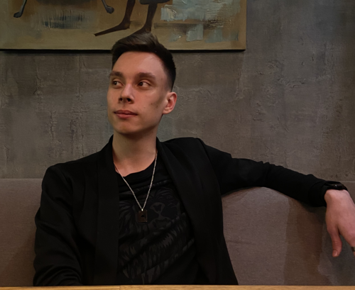

Абент Кирилл
Статус: в поиске работы
.NET разработчик
Back-end development
Местоположение: Самара (UTC +4), Российская Федерация
 GitHub: @Abent-Kirill
GitHub: @Abent-Kirill
Habr Career: abent_kirill
Hard Skills
| - ASP.NET Core | - Entity Framework Core | - Dependency Injection |
| - WPF | - PostgreSQL | - Serilog |
| - HTML5/CSS | - CI/CD | - xUnit |
| - C# |
Обо мне
Обладаю опытом участия в конкурсах по программированию и создания централизованных систем. Закончил колледж с красным дипломом, люблю сложные и нестандартные задачи, готов заниматься самообучением, коммуникабелен.Инициативный, болеющий за своё дело.
Имею статус самозанятого.
Достижения:
- Чемпионат World Skills Russia "Программные решения для бизнеса": 3 место (2020), 2 место (2021)
- Дисциплины: Моделирование баз данных, Работа с битыми данными, Разработка приложения, Автоматизация процессов, Работа с API, Презентация проекта
- Всероссийская олимпиада "Информатика и вычислительная техника": 5 место
- Чемпионат СГК-Skills: 2 место
- Демонстрационный экзамен по программированию.
Опыт работы
"ООО Авангард" (IT-компания Вита) 2 годаВедущий разработчик .NET
- Разработка и поддержка модулей;
- Работа с базами данных;
- Анализ требований и проектирование решений;
- Участие в тестировании и отладке;
- Взаимодействие с другими отделами и командами;
- Внедрение и поддержка CI/CD;
- Разработка Windows Installer для внутреннего ПО;
- Ревью кода;
- Участие в разработке разных проектов команды;
- Разработка и поддержка внутренних Nuget-packages;
- Самостоятельная и командная разработка.
Будучи принятым в эту компанию стажёром, я поставил перед собой цель добраться до должности ведущего разработчика и вести хотя-бы одно направление и через, примерно, 1.5 года я уже ввёл некоторые направления и был повышен до желаемой должности и добрался до желаемой зарплаты.
Проекты
CRM-система 2.0 для управления бизнес-процессами в аптеках. (Client)
Новый переписанный клиент старой CRM-системы для управления бизнес-процессами в аптеках, таких как инвентаризация, приёмка, продажа товара и маркировка мебели.
- Основные выполненные задачи:
- • Разработал форму для продажи товара (список, добавление в корзину, удаление из корзины) с использованием навигации по клавишам;
- • Разработал компонент генерации маркировки мебели для печати;
- • Разработал и передал компонент монитора инвентаризации
- • Разработал админ-панель для тестирования;
- • Внедрил и поддерживал CI/CD;
- • Code-Review;
Инструменты/Технологии: .NET 6, WPF, Git, GitLab CI/CD, HTML5.
CRM-система 2.0 для управления бизнес-процессами в аптеках. (Server)
Новый переписанный сервер старой CRM-системы для управления бизнес-процессами в аптеках.
- Основные выполненные задачи:
- • CRUD-операции с товаром для продажи;
- • Разрабатывал отдельные фичи для модуля инвентаризации;
- • Писал и дорабатывал уже существующие unit-тесты;
- • Внедрил гибкий поиск товаров;
- • Внедрил и поддерживал CI/CD;
- • Code-Review;
- Достижения:
- • Настройка и обогащение логгера;
- • Предложил и внедрил версионирование, а так-же автоматизировал его;
- • Внедрил Git workflow;
- • Принял на себя ответственность с документацией ошибок или некоторых не очевидных процессов;
- • Придумал и внедрил вспомогательные фичи, которые в последствии использовались другими сервисами и проектами;
- • Консультация (тестировщиков, аналитиков) по работе и поддержке проекта, в некотором плане являлся 3й линией поддержки, назначил меня руководитель за инициативность;
Инструменты/Технологии: .NET 6, ASP.NET, WebApi, xUnit, Entity Framework Core, PostgreSQL, dbf, Git, GitLab CI/CD.
Windows Installer
Windows Installer для быстрой и качественной установки из коробки сервера и клиента 2ой линией поддержки.- Основные выполненные задачи:
- • Разработал Windows Installer для проектов;
- • Внедрил Health-Check;
- • Внедрил проверку памяти и системных требований;
- • Установка зависимостей;
- • Тихий режим;
- • Автоматизация сборки Windows Installer по средствам CI/CD;
- • Поддержка проекта;
- Достижения:
- • Не имея опыта достаточно быстро изучил предметную область и разработал mvp версию;
- • На небольшой срок руководил ещё одним человеком на этом проекте;
Инструменты/Технологии: WiX, WiXSharp, GitLab CI/CD, Windows Installer.
Инвентаризация (Android приложение)
Приложение для ТСД (Android) для инвентаризации в аптеках.- Основные выполненные задачи:
- • Разработка элементов UI;
- • Исправление багов;
- • CRUD-операции с товаром;
- • Реализация поиска;
- Достижения:
- • С моим приходом в проект достаточно быстро разработали первые версии и сделали демонстрацию перед заказчиками.
Инструменты/Технологии: Xamarin, C#.
Assistant Kira 
Личный Telegram Bot для автоматизации и агрегации процессов. OpenSource проект ещё в разработке.
Ссылка на проект в GitHub- Основные выполненные задачи:
- • Интеграция с Google календарём для создания событий;
- • Показ новостей с функцией перелистывания;
- • Показ вакансий с фильтром с Habr Career;
- • Показ погоды по запросу и каждое утро;
- • Курс интересующих валют;
- • Интересующий перевод с одной валюты на другую;
Образование
ГАПОУ "Самарский государственный колледж"Факультет: Цифровых технологий
Специальность: Компьютерные системы и комплексы